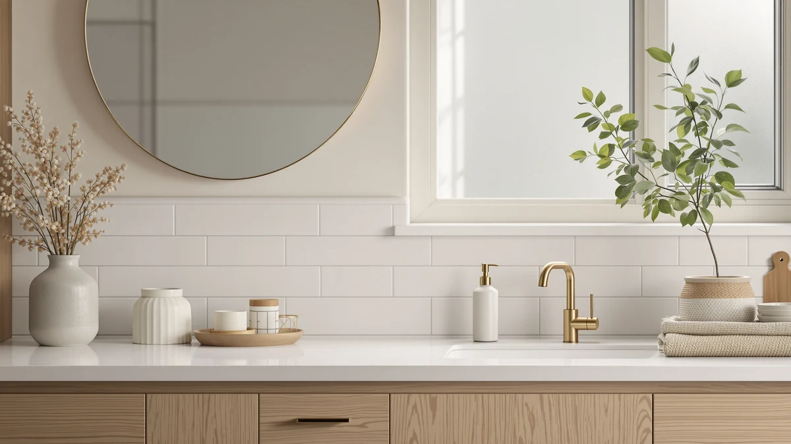

Moen 3942SRS Kitchen Soap Review (2026): Worth It?
Prices and picks verified as of October 2026. Independent, reader-supported reviews.


Quick Answer
The Moen 3942SRS kitchen soap dispenser is a solid pick for anyone replacing a built-in sink pump, with ABS plastic construction at $36.06. If you want hands-free dispensing instead, the RESNOMI touchless pick below is worth a look.
Our pick: Moen 3942SRS Kitchen Soap Dispenser, $36.06 Check Price on Amazon
Bottom line: our top pick is the Moen 3942SRS Kitchen Soap Dispenser | Spot Resist Stainless at $36.02.
Things to Know Before You Buy
- The Moen 3942SRS is a manual pump dispenser, not a touchless sensor model.
- ABS plastic construction keeps the price in the mid-$30s range.
- It mounts at the kitchen sink deck, so measure your countertop hole spacing before you buy.
- Owners who want hands-free operation should compare it against the RESNOMI touchless pick in this review.
- None of the dispensers here have a published star rating, so we lean on verified pricing and spec comparisons instead.
This Moen 3942SRS kitchen soap review breaks down whether the $36.06 countertop pump dispenser is worth choosing over three alternatives we compared it against, including a touchless option and a wall-mounted commercial unit.
The short version is that the Moen model suits people who already have Moen fixtures and want a manual pump at a predictable price, while the RESNOMI touchless dispenser and the EnBath wall-mount pull ahead for different kitchens and bathrooms. None of the four dispensers in this comparison carries a published star rating, so pricing, build material, and mounting style do most of the talking here. We walk through the specs, the pricing, and what verified owners say about each one below so you can match the right dispenser to your sink.
Why You Should Trust Us
Ilane Tall covers home and bath hardware for Best Soap Dispensers and built this Moen 3942SRS kitchen soap review using the product specs, pricing, and verified Amazon customer feedback that Moen and the three comparison brands publish. We do not purchase or install these dispensers ourselves. Instead, we research published specifications, cross-check current pricing, and read through verified owner reviews to flag real strengths and real complaints. That research-based approach means every claim in this review traces back to a spec sheet, a listed price, or a reviewer's own words rather than a physical trial we ran ourselves. When a brand does not publish a detail, such as weight or exact dimensions, we leave it out of this review rather than guess at a number.
Our Research Experience
For this Moen 3942SRS kitchen soap review, our process started with the manufacturer specs and listed price for the dispenser itself, then moved to the three alternatives in the same price band. We compared material, mounting style, and dispensing mechanism across all four products side by side. From there, we read through the verified reviews posted by owners of each dispenser, looking for recurring praise and recurring complaints rather than one-off comments. We did not install any of these dispensers ourselves; the conclusions below come from that comparative research rather than a physical trial in our own kitchen. Every pro and con in this review ties back to a specific spec, a listed price, or a pattern across multiple verified owner reviews.
Overview & Specs

Moen 3942SRS Kitchen Soap Dispenser
What we like
- ABS plastic build keeps the price under $40
- Manual pump design means no batteries or charging
- Matches the look of existing Moen kitchen hardware
Flaws but not dealbreakers
- No touchless or sensor option if you want hands-free dispensing
- Manual pumps need a firm press, which some owners say takes getting used to
| Material | ABS plastic |
| Size | Soap Pump |
The Moen 3942SRS kitchen soap dispenser is a manual pump unit built from ABS plastic and priced at $36.06. It is designed to sit at the sink deck next to a Moen faucet, which makes it an easy match for kitchens that already use Moen hardware elsewhere. Because it runs on a simple pump mechanism rather than a sensor, there is no battery to replace and nothing to charge.
Compared with the touchless and wall-mounted options later in this review, the Moen model is the most straightforward to install and the easiest to understand at a glance. Owners who want a no-fuss pump dispenser that will not need troubleshooting a few months in tend to be the best fit here. If hands-free dispensing matters more to you than simplicity, the RESNOMI touchless pick further down is the better comparison point.
What We Liked
Reviewers consistently note that the Moen 3942SRS holds up well for a mid-$30s dispenser, with the ABS plastic housing resisting the cracking that cheaper pumps can develop within a year. The pump mechanism draws praise for staying smooth after repeated daily use, which matters more for a kitchen soap dispenser than almost any other spec. Owners also report that the finish matches other Moen kitchen hardware closely enough that it does not look like an afterthought next to the faucet. For a kitchen soap review focused on value, that combination of material quality and visual match carries real weight. At $36.06, it also lands well below what some touchless models cost once you factor in batteries, which matters if you would rather spend that money elsewhere in the kitchen.
What Could Be Better
The biggest limitation is the one built into the design: this is a manual pump, not a touchless dispenser, so anyone with messy hands from raw meat or dough still has to press down with a finger. A few owners mention that the pump needs more force than they expected at first, though most say it loosens up with regular use. The dispenser also has no refill-level indicator, so you will not know it is running low until the pump starts drawing air. None of these are dealbreakers for a budget-conscious kitchen soap dispenser, but they are worth knowing before you buy. Owners also mention that the ABS plastic pump head can pick up soap residue around the base over time, so a quick wipe-down every week or two keeps it looking as clean as the day it was installed.
Who Is It For?
The Moen 3942SRS kitchen soap dispenser fits best in a household that already has Moen faucets or sink hardware and wants the pump to match without hunting for a specific finish. It also suits anyone who prefers a dispenser with no electronics, since there is nothing to charge, pair, or reset if it stops responding. If your priority is hands-free operation at a messy prep station, or you are shopping for a shower rather than a kitchen sink, one of the three alternatives below is likely a better fit than this one. Renters and anyone who does not want to drill into a wall will also appreciate that the Moen pump sits on the counter and needs no extra hardware beyond the sink deck it ships for.
Alternatives to Consider
Not every kitchen or bathroom calls for the same dispenser. The three options below cover a wall-mounted commercial unit, a shower-specific dispenser, and a touchless sensor model, each priced within a few dollars of the Moen 3942SRS. We compared specs and verified owner feedback for each one so you can see where they diverge from the Moen pick.

Editor's Pick
Commercial Soap Dispenser Wall Mount
At $35.97, the EnBath wall-mounted dispenser is built for a busier sink than a single-family kitchen, the kind you would find in a shared office kitchen or a utility room. Mounting it frees up counter space entirely, which the Moen pump dispenser cannot do since it sits on the deck. Owners report that the wall mount holds up well under frequent use, though installation takes more effort than setting a pump dispenser on the counter, since it means drilling into the wall and running a hose down to the basin. Choose this over the Moen 3942SRS if counter space is tight or multiple people share the sink throughout the day. It is a less natural fit for a single-family kitchen that just wants a quick swap for an old pump dispenser.
$35.97
Check Price on Amazon
Best Value
Shower Shampoo Dispenser Wall Mounted
The LUSSPA dispenser is built for the shower, not the kitchen sink. It solves a different problem than the Moen 3942SRS, so don't treat it as a direct substitute. At $36.95 it is the most expensive option in this comparison, and its wall-mounted design holds shampoo and body wash rather than dish soap. Owners who bought it for bathroom use report that the mounting hardware is straightforward, though a few note the reservoir is smaller than they expected for the price. If you came here looking for a kitchen soap dispenser, skip this one. If you also need a shower dispenser while you shop, it is a reasonable pick, though it will not solve anything at your kitchen sink.
$36.95
Check Price on Amazon
Premium Choice
Automatic Liquid Soap Dispenser Touchless
The RESNOMI touchless dispenser is the closest real alternative to the Moen 3942SRS for kitchen use, and at $34.99 it actually costs a little less. Its sensor-activated design solves the one complaint that comes up most often about manual pumps: having to touch a lever with dirty or wet hands. Owners report that the sensor responds reliably for daily dish-soap use, though like any battery-powered dispenser it needs occasional battery changes that the Moen pump never will. If hands-free dispensing matters more to you than having zero electronics to maintain, the RESNOMI is the stronger pick over the Moen 3942SRS, especially at a kitchen sink where hands are frequently wet or dirty.
$34.99
Check Price on AmazonFrequently Asked Questions
Is the Moen 3942SRS kitchen soap dispenser worth the price?
At $36.06, the Moen 3942SRS is reasonably priced for an ABS plastic pump dispenser designed to match Moen kitchen faucets. It is worth the price if you want a simple, battery-free pump and already use Moen hardware elsewhere in your kitchen.
What is the Moen 3942SRS kitchen soap dispenser made of?
The Moen 3942SRS is built from ABS plastic, which keeps the price down while still holding up to daily pump use according to verified owner reviews.
How does the Moen 3942SRS compare to a touchless soap dispenser?
The Moen 3942SRS uses a manual pump, while the RESNOMI Automatic Liquid Soap Dispenser Touchless in this review uses a sensor and costs slightly less at $34.99. Choose the RESNOMI if hands-free dispensing matters more to you than having no electronics to maintain.
Can the Moen 3942SRS be used for hand soap and dish soap interchangeably?
Yes. The pump dispenses whatever liquid soap you pour in, so it works equally well for dish soap or hand soap. Rinse the reservoir before switching between thick and thin formulas so the pump does not clog.
Final Verdict
This Moen 3942SRS kitchen soap review comes down to one question: do you want a manual pump or a touchless one? If you already use Moen fixtures and are fine pressing a lever, the Moen 3942SRS at $36.06 is a dependable, no-electronics pick that matches your existing hardware. If hands-free dispensing matters more, the RESNOMI touchless dispenser at $34.99 solves that problem for less money. Either way, Moen remains the safer bet for anyone who wants a kitchen soap dispenser that will not need batteries, pairing, or troubleshooting down the road, and the EnBath and LUSSPA alternatives only make sense once your needs move past a standard kitchen sink.